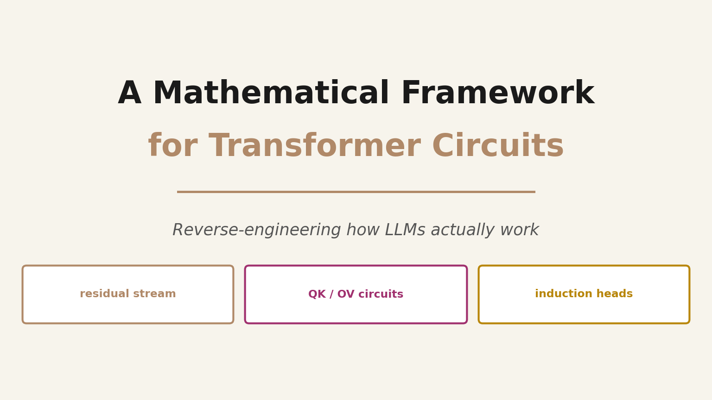
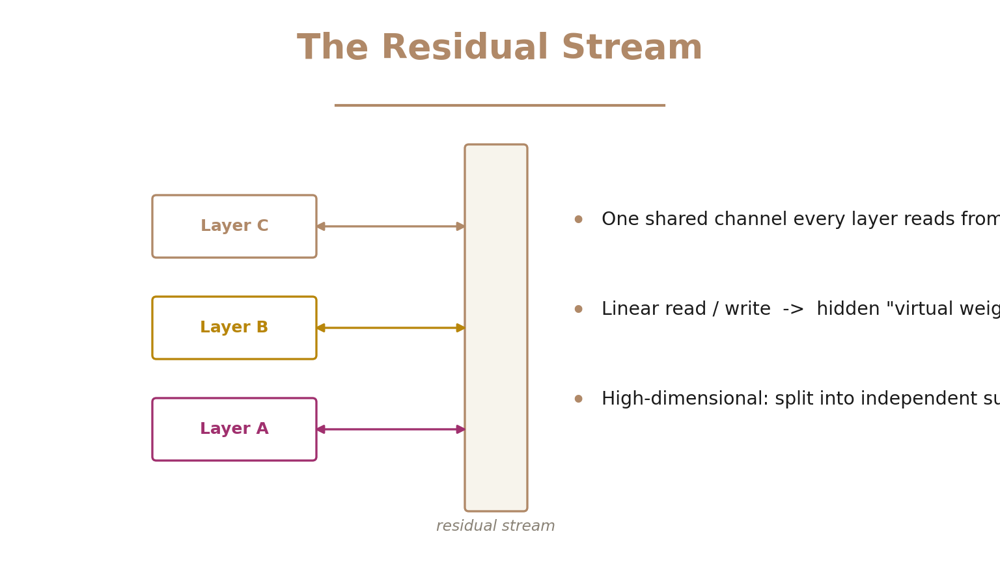
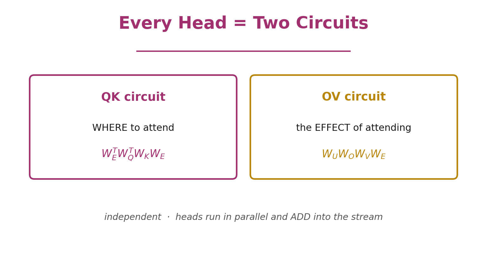
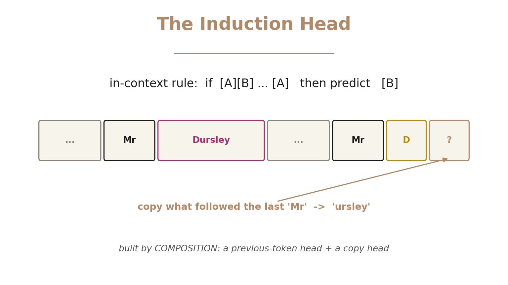

A Mathematical Framework for Transformer Circuits: How LLMs Actually Work

What if you could reverse-engineer a transformer the way you'd decompile a program — turning billions of weights back into human-readable algorithms?
That's exactly what Anthropic's 2021 paper A Mathematical Framework for Transformer Circuits set out to do, and it's the foundation almost all of modern mechanistic interpretability is built on. To make the math tractable, the authors studied a stripped-down model: attention-only transformers with zero, one, and two layers — no MLPs. Start simple, fully understand it, then add complexity.
🎬 Watch the full ~11-minute explainer:
▶️ Direct link: youtu.be/bMa4k0CparA
⚡ Short on time? Here's the 2-minute version — "What is a circuit in an LLM?"
▶️ Short: youtube.com/shorts/fA6oZw82hDM
The Residual Stream Is a Highway
The central object in the whole framework is the residual stream. Don't think of layers as a pipeline that transforms data step by step. Instead, picture one shared communication channel running through the network.

Every attention head and layer reads from this stream with a linear projection, computes, then writes its result back by adding a linear projection in. Because every operation is linear, you can multiply the weights through the stream — and hidden connections appear, what the authors call virtual weights, directly linking any pair of layers. And because the stream is high-dimensional, it splits into independent subspaces: two layers only interact if one writes where the other reads.
Every Attention Head Is Two Circuits
Here's the heart of the paper. An attention head looks like it has four weight matrices — query, key, value, output. But for understanding, they always group into just two circuits.

- The QK circuit decides where a head attends — which destination token reads from which source token:
$$\text{QK} = W_E^{T} \, W_Q^{T} \, W_K \, W_E$$
- The OV circuit decides the effect of attending — how the attended-to token changes the output:
$$\text{OV} = W_U \, W_O \, W_V \, W_E$$
There's a deep reason this grouping is natural: query and key only ever appear together as $W_Q^{T} W_K$, and output and value only as $W_O W_V$. The model never uses them apart. Where to look, and what to do once you look there — and you can analyze each circuit independently.
One-Layer Models: Skip-Trigrams
Apply this to a one-layer attention-only transformer and, because everything is linear, the entire model collapses into one clean product: embed → move information via each head's attention pattern $A^h$ and OV circuit → unembed. Expanding it splits the model into a direct path (just bigram statistics) plus one clean, additive term per head.
So what do one-layer heads learn? Skip-trigrams — patterns of the form A ... B → C. A head sees keep earlier, the current token is in, so it predicts mind. These are genuine in-context copying rules recovered straight from the weights.
The framework even predicts the model's bugs: because QK and OV are separate, a head that learns keep…in→mind and keep…at→bay will also wrongly allow keep…in→bay. When your theory predicts the exact mistakes you then observe, you know you're reading the real mechanism.
💡 You can also detect copying behavior straight from the weights using eigenvalues: treat the OV circuit as a token-to-token map; a copying head maps tokens back to themselves, so its eigenvalues are positive.
⚡ 90-second version — "What is a skip-trigram?"
▶️ Short: youtube.com/shorts/LxmtD5Ibpew
Two Layers: Composition & Induction Heads
Add a second layer and something new appears: composition. A head in the second layer can read what a head in the first layer wrote — through Q-composition (shaping queries), K-composition (shaping keys), or V-composition (shaping values). Two simple heads chain into an algorithm neither could do alone.
The most famous result is the induction head:

An induction head implements a powerful in-context rule: if the pattern A B appeared earlier, and you now see A again, predict B. It's a two-head circuit — a first-layer previous-token head tags each position with the token before it, and a second-layer head uses K-composition to find where the current token last appeared, then copies what came next. Having seen "Mr Dursley," when the model later hits "Mr D," it predicts "ursley." This is in-context learning, pinned down as a concrete mechanism.
⚡ 90-second version — "What is an induction head?"
▶️ Short: youtube.com/shorts/JSoHLBhCEnI
Path Expansion: Virtual Attention Heads
Multiply out a two-layer model and you get terms of increasing order: order 0 is the direct path (bigrams), order 1 is each individual head, and order 2 gives virtual attention heads — pairs of real heads composed together. That order-2 term is exactly where induction heads live: small on average, but disproportionately important. Expanding the paths makes the whole computation legible.
Why This Framework Matters
This paper gave us a vocabulary for reading the inside of a transformer:
- The residual stream as a shared channel.
- Every head as a QK circuit (where to attend) + an OV circuit (the effect).
- Composition and virtual heads that chain simple parts into real algorithms.
- Induction heads — the first concrete mechanism of in-context learning ever pinned down.
Attention-only models were just the starting point — MLPs and deeper networks bring real complications — but the concepts generalize, and almost every interpretability result since (monosemantic features, superposition, the discovery of induction heads driving in-context learning) builds directly on this language. It's the moment the black box started to become readable.
Source: Elhage, Nanda, Olsson, et al., "A Mathematical Framework for Transformer Circuits," Anthropic — Transformer Circuits (December 2021). The diagrams above are our own illustrations of the paper's ideas.
If this helped the black box feel a little less black, please subscribe and like — we're just getting started. Thanks for reading! 🙏
Cite this post
Auto-generated. Verify for your institution's requirements.